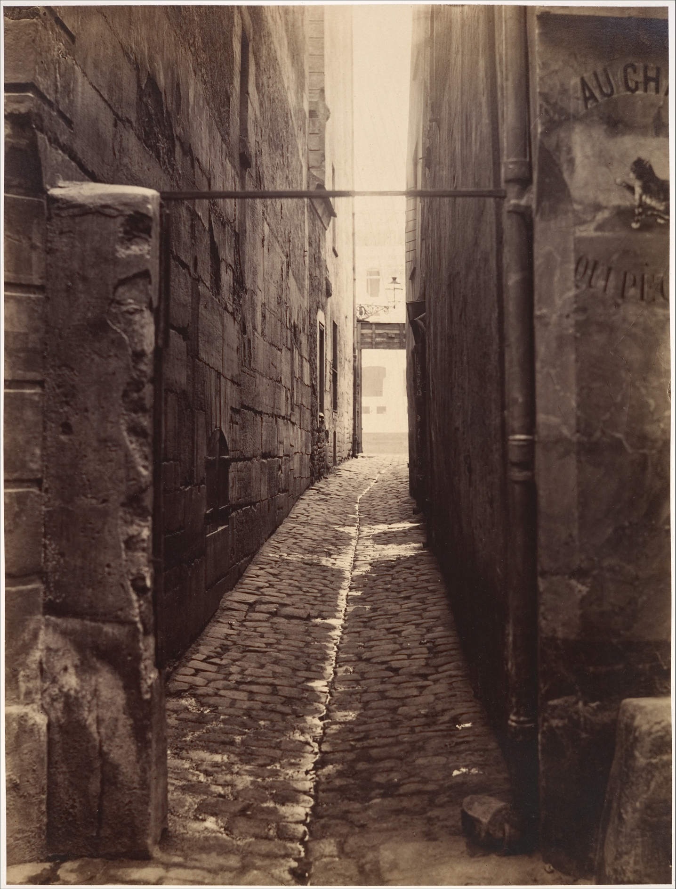
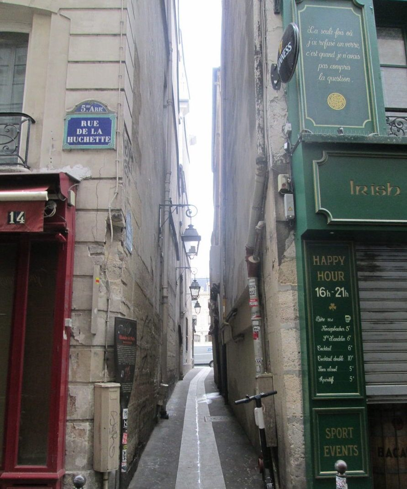
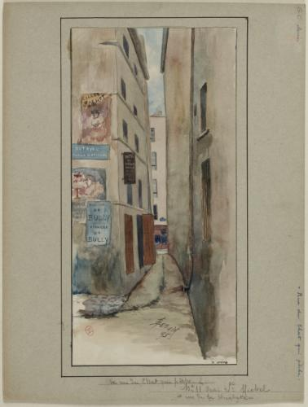

Paris? Littéralement LA place ou être!Mais entre tous ses monuments,places et attractions, que faire? Découvrez tous les mystères 🕵️♀️ et lieux iconiques 📍 sur cette page!
Ce qu'il y a de si exeptionel? TOUT ! Un jardin envoutant avec certains des plus viels arbres de Paris, le meilleur des personnels et des CVL, ET une cafetaria avec des chocolats chauds et cafés exeptionnels !
Que savoir sur le jardin? Tout dabord,c'est 6 500 m²,où l'on y trouve lapins, peruches, canards !(source peu sûre pour ce dernier). Mais l'on y trouve aussi une incroyable et époustouflante diversitée d'arbres,dont certains des plus vieux de la capitale. Fun fact : le gymnase a même été construit autour des racines de l'un d'eux pour le proteger!
Un personnel ✨!En plus de ce jardin unique, ce sublime lycée possède un personnel exeptionnel! Que ce soit Mr courtois, un professeur de NSI et de mathematiques (avec un peu de chance vous pourrezle croiser dans les couloirs ou le jardin), ou bien le CVL avec nos chers camarades de classes qui mettent une bonne ambiance et organisent des évènements (par exemple la vente de roses pour la saint valentin) !
Pour plus d'information, cliquez ici✨🏫 , ou sur l'image du lycée.
La plus étroite rue de Paris, c'est un des incoutournables de la capitale.
|  |  |  |
|---|---|---|
| En 1868 | Maintenant | Petite carte postale :) |
Alors, pourquoi s'y rendre? Tout dabord, pour son nom génial!(A l'origine, le nom d'un ancien poissonier qui s'y trouvait).De plus, cette incroyable rue relie le quai Saint Michel à la rue de la Huchette, dans le 5ème arrondissement, et a été ouverte en 1540. Elle nous fait voyager dans l'ancien Paris, et nous en expose toutes ses secrets!
Pour plus d'informations, cliquez ici✨🎣😼
Lieu de repos incoutournable, vous y trouverez plusieurs stars: (moi, auteure de ce site web ( principalement la raison pour lequelle je suis connue)),mais aussi ma soeur ⭐.
Pour retourner à la page d'acceuil,cliquez ici
Pour retouner en haut ,cliquez ici